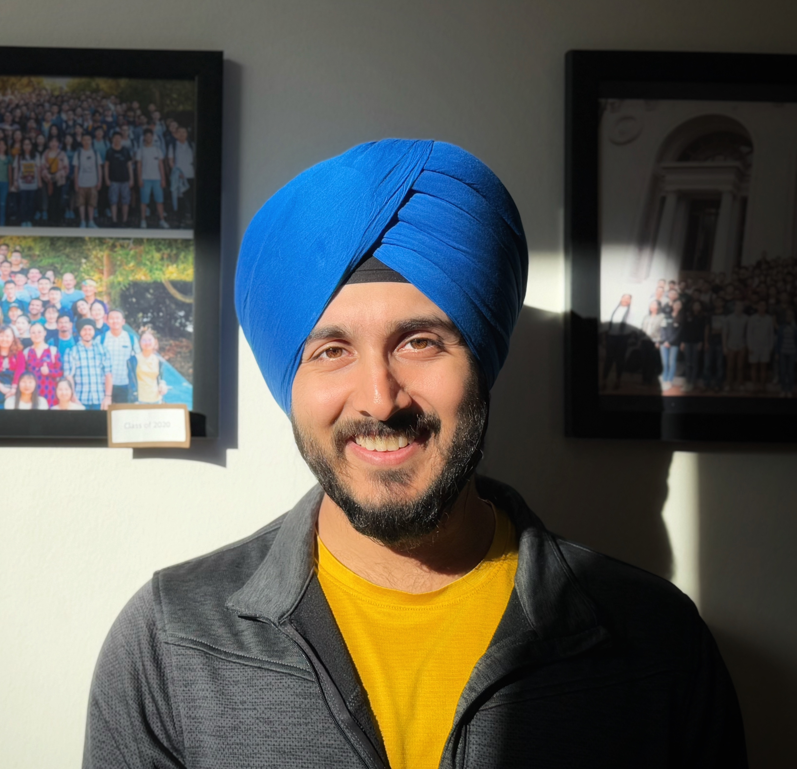
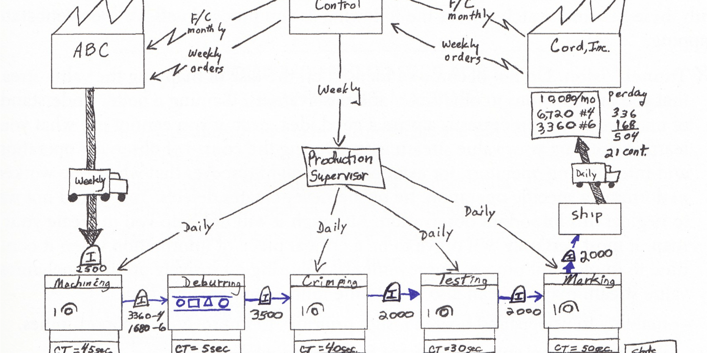
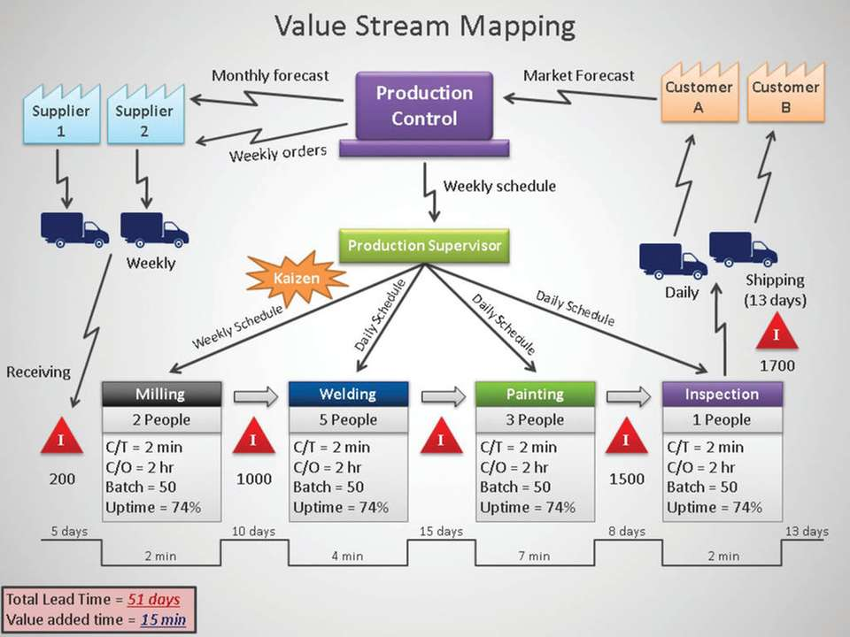

SQL & Lean Six Sigma Methodologies


Lean tools usage has begun to grow rapidly in the past two decades. Standalone concepts like lean, VSM, and Green tools are highly researched upon but there is a huge gap identified in combining these techniques — especially because its practicality is questioned.
The main purpose of this research was to analyze the current state of methodology adopted in a bonnet manufacturing industry and optimizing the process by designing a future state map using a simulation approach. The case study approach was proposed to highlight the applicability of VSM in an Indian bonnet manufacturing organization. We tried to bridge the gap between connecting VSM with simulation, which had never been attempted before.
The methodology relied on formulation of Value Stream Mapping being the main tool used to identify the opportunities for classifying and eliminating bottlenecks with the help of various lean techniques. A contrast of present and past scenario was highlighted to underscore the importance of using VSM with Arena Simulation.
This research combines VSM with simulation and lean techniques including Break-even analysis to authenticate its practicality. The green tools have been emphasized upon directing at reduction of environmental impacts.